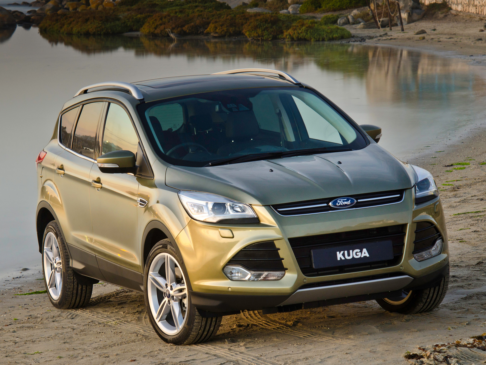
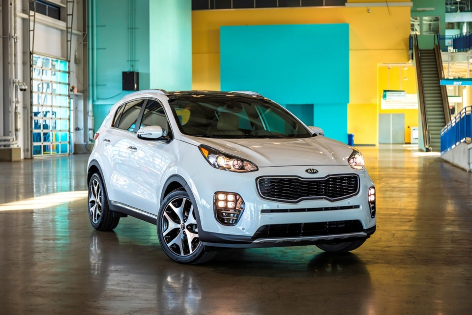
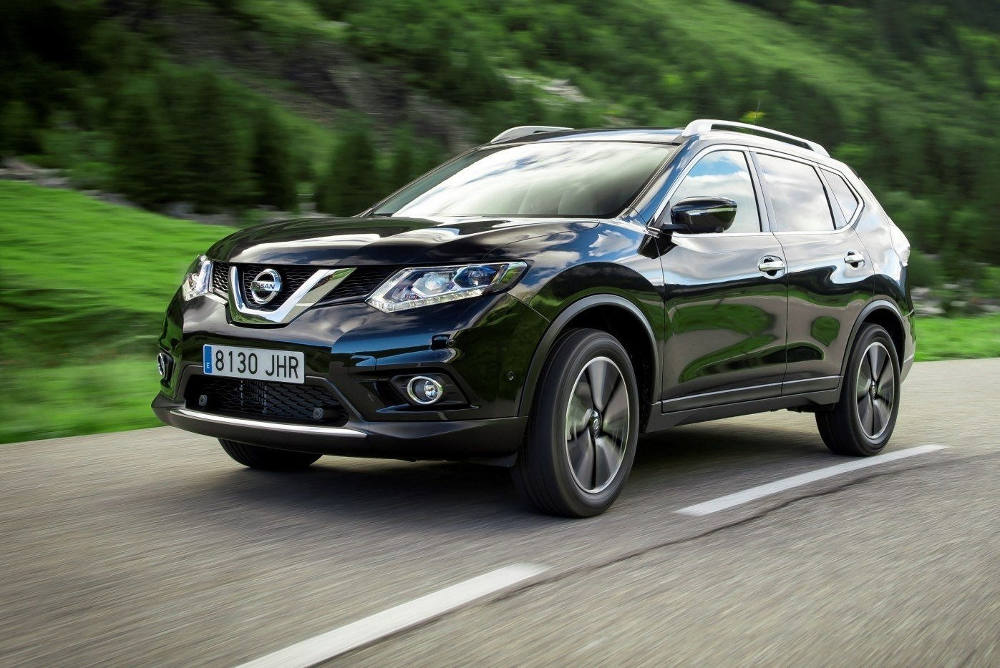
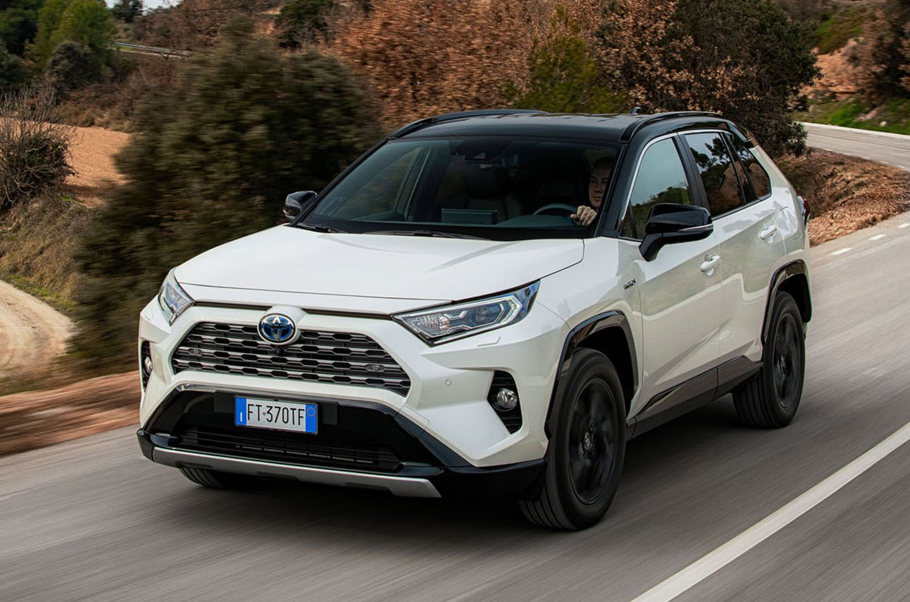
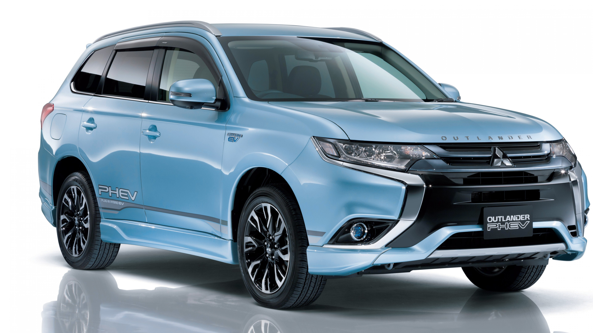

 Ford Kuga — компактный переднеприводный кроссовер американского автомобильного концерна Ford Motor Company, выпускающийся с 2008 года. Ford Kuga стал дебютным компактным кроссовером американцев, который разработало их немецкое отделение — «Ford of Europe». Данная версия SUV сменила на рынке Европы вседорожную модель Maverick, которую многие знают, как «Escape». Интересно, что наименование данного автомобиля созвучно со словом «cougar», которое переводится как «кугуар» — одно из названий пумы. Впервые этот кроссовер был представлен в виде прототипа Ford Iosis X на Парижском автосалоне 2006 года. А уже через год появился концепт Ford Kuga первого поколения, после презентации новинки на Женевском автосалоне в 2008 году он поступил в продажу и стал самым продаваемым вседорожником Ford. Сегодня на рынке присутствует уже три поколения кроссовера Ford Kuga, последнее из которых, выпущенное в 2019 году, можно приобрести в Израиле. Первое поколение Форда Kuga выпускалось с 2008 по 2012 год. Первый Ford Kuga основан на «платформе» Ford С1, на которой также построены и Форд Focus, и C-МАХ, и Mazda3 с Mazda5, и Volvo S40 с Volvo V50. Основная задумка внешнего вида Ford Kuga 2008 года состояла в кинетическом дизайне. Новая фирменная стилистика позволила сделать кроссовер безошибочно узнаваемым. Передняя часть Ford Kuga имела огромную решетку фальшрадиатора и головную оптику больших размеров. Внешние зеркала — на достаточно длинной ножке, которая установлена на двери. Резкий профиль и заостренные детали придавали спортивный характер первому Ford Kuga, а внутри машина получила довольно объемный салон и широкое багажное отделение. За внедорожные качества отвечала система подключаемого полного привода с муфтой Haldex, которая подключала задние колеса. Благодаря сложной многорычажной независимой задней подвеске первый Kuga обладал достаточно хорошей управляемостью, был послушен в повороте и быстро откликался на движение рулевым колесом. Плюс к этому, Форд уделил большое внимание безопасности своего нового кроссовера, и на тесте EuroNCAP Ford Kuga получил максимальное число звезд — 5. Второе поколение Форда Kuga выпускалось с 2012 по 2016 год. На момент презентации фордовцы назвали Ford Kuga второго поколения самым технологичным европейским «Фордом». В нём были: и открывающаяся «без рук» дверь багажника, и новейшие системы безопасности, и красивая мультимедийная система SYNC, и масса всего другого. Кроме того, у «второго» Форда Куга появился экономичный турбированный малообъёмный двигатель, а интерьер стал красивее и дороже. Уровень безопасности Ford Kuga 2 поколения был ещё выше, чем у первого! 100% за активную безопасность, 94% за безопасность взрослого пассажира и 86% — за ребёнка получил Ford Kuga 2012 года на тесте Euro NCAP. В самом конце 2016 года появилась рестайлинговая версия 2 поколения кроссовера Ford Kuga, которая выпускалась до октября 2019 года. У обновлённого Куга появились стильные вытянутые фары головного освещения с линзованной оптикой и каймой светодиодных ходовых огней, новая решетка радиатора шестиугольной формы с двумя крупными горизонтально ориентированными ребрами и логотипом производителя. Внизу, по краям бампера, расположились небольшие углубления, отделанные черным пластиком, в которых находятся крупные противотуманные фары. На порогах, бамперах и колесных арках — специальные накладки из черного неокрашенного пластика — необходимый атрибут кроссовера, призванный защитить лакокрасочное покрытие кузовных деталей от летящих из-под колес гравия и песка в случае движения по грунтовой дороге. Внутри обновлённый Куга стал оснащаться 7 подушками безопасности, штатными парковочными датчиками, камерой заднего вида, климат-контролем, многофункциональным бортовым компьютером, датчиками света и дождя, полным электропакетом, кожаным салоном, сиденьями с электрическими регулировками и запоминанием параметров, датчиками давления в шинах, круиз-контролем, системой контроля мертвых зон, панорамной стеклянной крышей, аудиосистемой премиум класса, электроприводом крышки багажника, штатной навигационной системой, ключ-картой для запуска двигателя с помощью кнопки и даже системой автоматической парковки. Ford Kuga третьего поколения, официально представленный 2 апреля 2019 года на специальном мероприятии Go Further в Амстердаме, выпускается по настоящее время. Kuga и прежде был ближайшим родственником Форда Фокус: их роднили платформа и общие дизайнерские решения. Но машина третьего поколения приблизилась к донору как никогда близко. Силуэт стал динамичнее, профиль капота сделан более горизонтальным, в целом Kuga больше напоминает хетчбэк, нежели кроссовер. При этом новый Ford Kuga стал крупнее предшественника: длина выросла на 89 мм (до 4613 мм), ширина — на 44 мм (до 1882 мм), а колесная база — на 20 мм (до 2710 мм). И только высота теперь меньше на 20 мм (1669 мм). Кузов стал на 10% жестче, но оптимизация конструкции позволила уменьшить массу машины на 90 кг.
 Внедорожник Kia Sportage первого поколения (1993-2002) Компактный рамный внедорожник Kia Sportage, запущенный в серийное производство в 1993 году, имел несколько модификаций: обычную пятидверную, удлиненную, называвшуюся Grand, и двухдверную с открытым кузовом. Автомобиль оснащался «маздовскими» двухлитровыми моторами, бензиновым (117-128 л. с.) и дизельным (83 л. с.), коробка передач была механической или автоматической. Kia Sportage обладал неплохими внедорожными способностями: у него была полноприводная трансмиссия с жестко подключаемым «передком» и понижающая передача. С 1995 до 1998 года версии для европейского рынка выпускались в Германии компанией Karmann. А машины для продажи в России делали на калининградском «Автоторе»: сначала это была отверточная сборка, позднее — производство со сваркой и окраской кузовов. Kia Sportage второго поколения, выпускавшийся с 2004 до 2010 года, стал крупнее предшественника и «перешел» в класс кроссоверов, лишившись рамной конструкции и получив полноприводную трансмиссию электромагнитной муфтой в приводе задних колес. Кроме того, в модельном ряду была и исключительно переднеприводная модификация. Базовым был двухлитровый бензиновый мотор (142 л. с.), вариант с двигателем V6 2.7 имел мощность 175 сил. Турбодизельный Kia Sportage оснащался двухлитровым силовым агрегатом, развивавшим 112 л. с. В 2007 году было начало производство машин на заводе в Словакии, «Спортадж» для российского рынка продолжили делать в Калининграде. Компактный кроссовер Kia Sportage третьего поколения выпускался с 2010 по 2016 годы в Южной Корее, автомобили для российского рынка собираются «отверточным» методом на калиниградском «Автоторе». В 2014 году автомобиль пережил модернизацию. На Российском рынке машина предлагалась с бензиновыми и дизельными моторами 2.0, с передним или полным приводом. Коробка передач — «механика» или «автомат». Стоимость самой доступной версии составляла 1 129 900 рублей. Новое поколение было представлено в 2015 году на Франкфуртском автосалоне. На момент старта продаж Kia Sportage будет предлагаться с 3 бензиновыми и 3 дизельными моторами. В марте 2019 года компания KIA начала продажи удешевленного кроссовера KIA Sportage с турбированным двигателем.
 Nissan X-Trail — компактный кроссовер, производство которого было запущено в 2000 году японской компанией Nissan на фирменной платформе Nissan FF-S. В 2007 году на платформе Nissan C было создано и выпущено на рынок второе поколение. В 2013 году вышло третье поколение на платформе CMF. X-Trail был разработан в 2000 году на платформе Nissan FF-S, ранее использованной в легковых моделях Nissan Primera и Nissan Almera. X-Trail обладал двумя бензиновыми силовыми агрегатами объёмом 2.0 и 2.5 литра, которые выдавали порядка 140 и 165 л. с., а также 2.0 литра турбо 280 л. с. Дизайн автомобиля, представившего Nissan в сегменте кроссоверов, был выполнен в стилистике внедорожника Nissan Patrol. Своей практичностью во всех отношениях, автомобиль быстро приобрел популярность во многих странах, в том числе и в России. Особенность салона — расположение приборной панели посередине торпеды. Задние сиденья при убранных подголовниках образуют ровный пол. В 2003 году проведен рестайлинг, изменения коснулись торпеды салона и бамперов, включая приборную панель, блоки управления двигателем, АКПП и ABS. Из технических, был заменен катализатор выхлопной системы на моделях для японского рынка, вместо двойного керамического стал один металлический, как и у моделей для Европы. Также добавились две эксклюзивные версии-Rider и AXIS, отличающиеся внешне бамперами и решетками радиаторов, внутри отделкой салона, так же колесными дисками и новыми цветами окраски кузова. Так же для версии GT в стандартной комплектации присутствует система динамической стабилизации (VDC), включающая электронные межколесные блокировки на осях. В некоторых комплектациях для Европы, как и в версии GT для Японского рынка сделали рейлинги на крыше с прожекторами, которые можно включать вместе с дальним светом. Оснащена системой управления полным приводом All Mode 4x4, позволяющий кроссоверу преодолевать внедорожные препятствия. В 2007 году на Женевском автосалоне был представлен концепт второго поколения Nissan X-Trail, а уже в конце года серийная версия автомобиля поступила в продажу в Европе. X-Trail второго поколения был построен уже на платформе Nissan C, на базе которой годом ранее (2006) был выпущен кроссовер Nissan Qashqai. 17 ноября 2009 года российское подразделение автоконцерна Nissan начало прием заказов на кроссовер X-Trail, собранный в Санкт-Петербурге. На Женевском автосалоне 2012 года Nissan показал концепт Hi-Cross, а осенью 2013 года дебютировал серийный Nissan X-Trail третьего поколения, созданный на основе концепта. Автомобиль спроектирован на новой модульной платформе CMF, общей с моделью Nissan Qashqai, однако практически по всем параметрам превосходит его, в том числе размерами кузова. Также стоит отметить, что концепция «брутального» внедорожника с угловатыми линиями кузова сменилась на более «прогрессивную» городскую, однако, не лишенную былой «угловатости» в некоторых линиях. В декабре 2014 года Nissan X-Trail начали выпускать на заводе в Санкт-Петербурге, старт продаж на российском рынке состоялся в 2015 году. Новый Nissan X-Trail был представлен в ходе Лиги Чемпионов УЕФА, в июне 2017 года. Изменения затронули как дизайн, так и техническое оснащение автомобиля. В частности, изменилась форма переднего и заднего бамперов, расширилась решетка радиатора, появились узкие фары с светодиодными дневными ходовыми огнями. Рулевое колесо получило новую D-образную форму. В палитру цветов кроссовера было добавлено несколько новых оттенков, например ярко-оранжевый Orange Pearl. В 2020 году автомобиль также получил новые опции: новую мультимедийную систему Nissan Connect, вариант комбинированной отделки сидений Alcantara® цвета кофе и дистанционный запуск.
 Toyota RAV4 — компактный кроссовер, запущенный в производство в Японии в 1994 году. Первое поколение позиционировалось компанией Toyota как молодёжный автомобиль для активного отдыха, отсюда и происхождение названия (Recreation Active Vehicle), цифра «4» указывает на постоянный полный привод. Первое поколение RAV4 (SXA10) было создано на базе Toyota Celica GT-Four. В производство был запущен кузов с тремя дверями. C 1995 г начался выпуск 5-дверных кузовов. На автомобиль устанавливали двигатели объёмом 2,0 литра, 3S-FE и 3S-GE мощностью соответственно 135 и 178 л. с. RAV4 первого поколения оснащался также механической либо автоматической коробкой передач и имел привод либо на передние, либо на все колеса. С 1997 г. RAV4 первого поколения получил также версию кузова с тканевой крышей и прошёл незначительный рестайлинг. Rav4 уже первого поколения официально продавался на российском рынке. Второе поколение RAV4 (CA20W) выпускалось с 2000 по 2006 год. Сохранились как трёхдверные, так и пятидверные версии автомобиля. По аналогии с первым поколением RAV4 выпускались автомобили с передним приводом (в основном для рынка США и Японии) и постоянным полным. На автомобиль устанавливали бензиновые двигатели объёмом 1,8 л 1ZZ-FE (123 л. с. (переднеприводные автомобили)), 2,0 л 1AZ-FE, 1AZ-FSE (150 л. с.), 2,4 л 2AZ-FE, 2AZ-FSE (161 л. с.), а также дизельный 2-литровый двигатель D-4D (116 л. с.). Toyota RAV4 после рестайлинга 2003 года Модели 2001—2003 годов выпуска известны большим числом жалоб на АКПП, основная причина проблем которой — неисправность электронного блока управления. Из-за этой проблемы Toyota объявляли отзывную кампанию и продляли гарантии на автомобили 2001—2003 г.в. до 10 лет[4]. Но, несмотря на это, сама по себе автоматическая коробка передач Aisin U140/U140F, устанавливаемая на этот автомобиль, является достаточно надёжной. Toyota опубликовала список проблемных ЭБУ, рекомендуемых к ремонту или замене. Электронные блоки управления, которые не входят в опубликованный список, подобных проблем не вызывали. В Японии третье поколение RAV4 (CA30W) появилось в продаже в ноябре 2005. В США и Канаде — в декабре 2005 года, а в Европе — 1 января 2006 года. RAV4 третьего поколения лишился трёхдверной версии. Произошли изменения и в схеме полного привода — он перестал быть постоянным полным. Для рынка США выпускается удлинённый вариант кузова, также имеется модификация с 6-цилиндровым двигателем рабочим объёмом 3,5 литра. В 2010 году состоялась презентация обновлённого RAV4.
 Mitsubishi Outlander (autˈlændər) — среднеразмерный кроссовер, выпускаемый японской корпорацией Mitsubishi с 2001 года. Изначально, когда продажи начались в Японии, он назывался Mitsubishi Airtrek и базировался на концепт-каре Mitsubishi ASX, показанном в 2001 году на Североамериканском международном автосалоне. Оригинальное название Airtrek было выбрано потому, что оно «описывает способность автомобиля перевозить пассажиров на далёкие расстояния свободным, как птица» и «был придуман из слов воздух и путь (Air и Trek), чтобы выразить идею вольного, полного удовольствия автомобильного путешествия». Название Outlander, которое появилось позже, в свою очередь означало «чувство путешествия к далеким, неизведанным землям, в поисках приключений». Второе поколение, которое появилось в 2005 году, продавалось повсеместно под названием Outlander несмотря на то, что производство старой модели не прекращалось. Новое поколение базировалось на новой платформе GS, и имело несколько двигателей, причём не только от Mitsubishi, но и от Volkswagen и PSA Peugeot Citroën. Citroën C-Crosser и Peugeot 4007 являются ребеджированными версиями Outlander. Airtrek впервые был представлен 20 июня 2001 года в Японии, по цене 1,7-2,3 млн ¥. На выбор предоставлялись 2,0-литровый 4G63 и 2,4-литровый 4G64 в комплекте с 4-ступенчатой полуавтоматической КПП. Были доступны и передний, и полный приводы. Полноприводная версия использовала открытые дифференциалы на передних и задних мостах вкупе с вязкостной муфтой на центральном дифференциале. Самая мощная модель имела двигатель от Mitsubishi Lancer Evolution — 2-литровый 4G63T, который появился в 2002 году. Для японских покупателей были по прежнему доступны старые двухлитровые моторы, которые были соответственны с японскими правилами, касающимися внешнего размера и объёма двигателя. В 2003 году автомобиль стал доступен для покупателей Северной Америки, там он заменил Mitsubishi Montero Sport и имел видоизменённую решётку радиатора и головную оптику, вследствие чего, общая длина кузова стала больше на 130 мм, тем не менее, параллельно продавались 2 модели. Платформа была взята от Mitsubishi Grandis, который также начал свои продажи в 2003. Тогда же появился самый мощный 2,4-литровый 4G69 SOHC с системой MIVEC, заменивший 4G64. Кроме того, в 2004 стал доступен турбированный 4G63T. В Южной Америке Outlander также был известен как Montero Outlander, чтобы связать кроссовер с лидером продаж Mitsubishi Montero Sport.